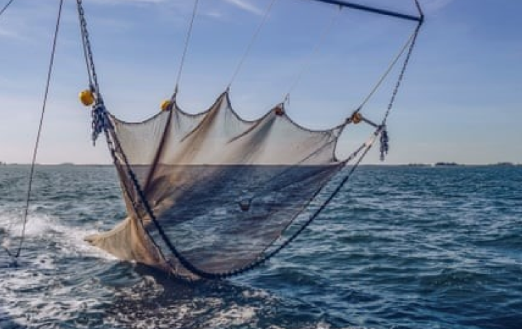
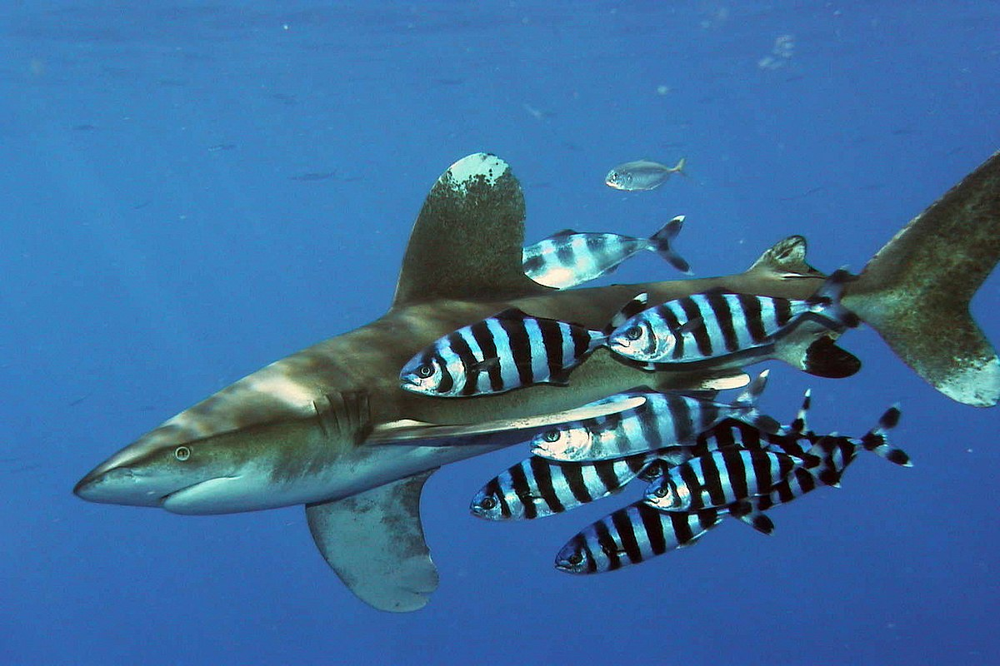
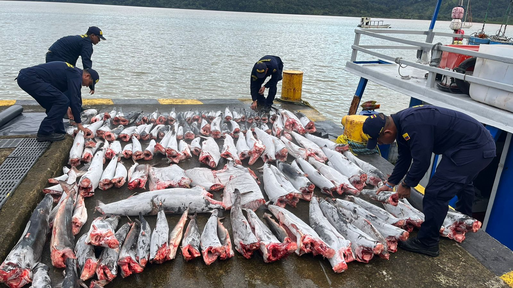
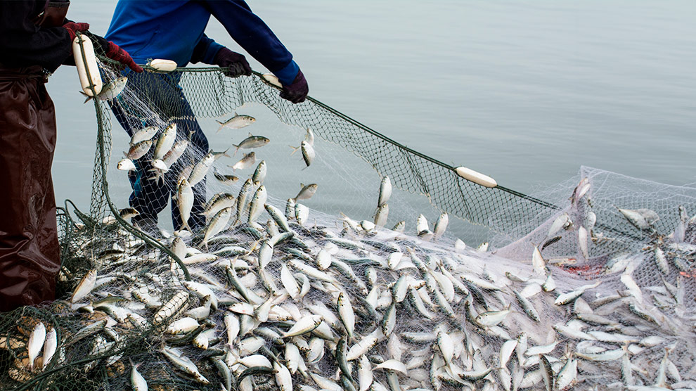

REDE DE ARRASTO: CARACTERIZAÇÃO DA PESCA E
IMPACTOS AMBIENTAIS
O artigo tem como objetivo caracterizar a pesca com rede de arrasto, avaliando os impactos ambientais causados pela atividade pesqueira; a captura incidental de diversas espécies, torna a pesca de arrasto danosa, pois não seleciona os individuos a serem retirados do meio.

IMPACTO DA PESCA SOBRE A DIVERSIDADE GENÉTICA DE ESPÉCIES DO GÊNERO CARCHARHINUS
Carcharhinidae é uma das famílias de elasmobrânquios mais importantes economicamente. dentro dessa familia se destaca o gênero Carcharhinus, como um dos mais afetados pela pesca no Brasil, devido a sua arande incidência no litoral brasileiro. A pesca de forma excessiva tem se tornando um grande problema para esse grupo, uma vez que ela gera inúmeros desequilibrios na dinâmica de tal, e este texto discorre sobre.
 AUMENTO DA TEMPERATURA, TURISMO, POLUIÇÃO E PESCA: OS RISCOS AOS CORAIS BRASILEIROS
AUMENTO DA TEMPERATURA, TURISMO, POLUIÇÃO E PESCA: OS RISCOS AOS CORAIS BRASILEIROS
Este estudo faz um levantamento bibliográfico sobre os recifes de corais do Brasil que estão sendo atingidos pelos impactos das mudanças climáticas, poluição, pelas atividades turísticas e pesqueiras, etc.

PESCA ILEGAL, NÃO DECLARADA E NÃO REGULAMENTADA E SUAS
CONSEQUÊNCIAS PARA A PRESERVAÇÃO DO MEIO AMBIENTE MARINHO
O presente estudo investiga a Pesca llegal, não Declarada e não Regulamentada e seu impacto na preservação da biodiversidade marinha

PRINCIPAIS PREOCUPAÇÕES DA ECONOMIA AZUL:
UMA PERSPETIVA BIOLÓGICA E AMBIENTAL
A dissertação discute as principais preocupações relacionadas com a Economia Azul (isso é, o uso sustentável dos recursos oceânicos para o crescimento econômico, a melhoria dos meios de subsistência e do emprego, preservando a saúde do ecossistema, conceito elaborado pelo Banco Mundial), como a sustentabilidade das pescas e o turismo marinho e costeiro.
 IMPACTOS ORIUNDOS DA CULTURA DA PESCA PREDATÓRIA NO BRASIL: MEIOS PARA SOLUÇÃO DO CONFLITO, PESCA ESPORTIVA E AQUICULTURA
IMPACTOS ORIUNDOS DA CULTURA DA PESCA PREDATÓRIA NO BRASIL: MEIOS PARA SOLUÇÃO DO CONFLITO, PESCA ESPORTIVA E AQUICULTURA
O excerto tem como objetivo analisar as nuances da atividade pesqueira no Brasil, trazendo esclarecimentos a respeito das modalidades de pesca, em especial as diferenças entre a Pesca Esportiva e Pesca Predatória, bem como os impactos ao Meio Ambiente oriundos de tais atividades.